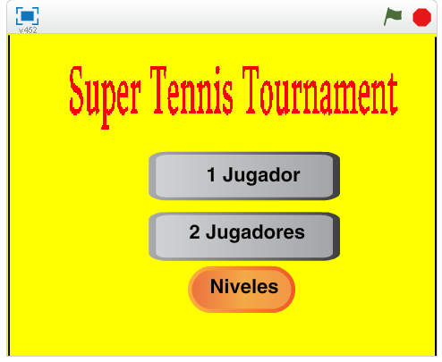
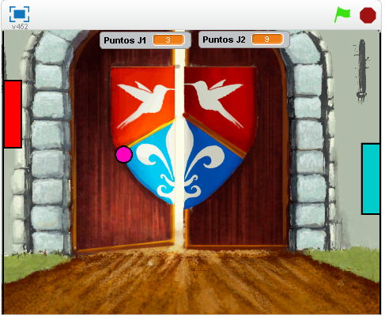

Scratch
Para nuestro proyecto de Scratch, se nos dio la tarea de realizar un juego utilizando la mayoría de los componentes de scratch: movimiento, apariencia, sonido, control, sensores, eventos, variables y operadores.
En mi caso, realice un juego de tennis clasico.
Caracteristicas del juego:
- Contiene menu principal
- 1 o 2 jugadores
- La dificultad aumenta conforme se avanza
- Transicion de escenarios
- Pantalla de Game Over

Opinion
Fue entretenido trabajar en Scratch debido a la facilidad con la que se puede manejar gracias a sus bloques.